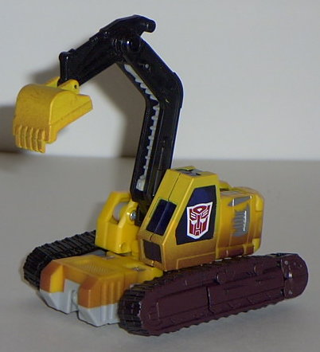 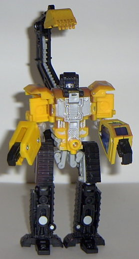
Size : Deluxe
Difficulty of Transformation : Medium
Individual Rating : 7.3
Giftset Contains
: Grimlock, Heavy
Load, Hightower, and Wedge
Allegiances
: Autobot
Price
: $15 (U.S.)
Color Scheme
: "Cheese" yellow, black,
light gray, and some dark reddish brown, transparent dark blue, dark blue,
and silver
Mold History
: Landfill was a completely
new gestalt created for Car Robots (which subsequently became Robots in
Disguise).
Overall Rating
: 7.7
 Grimlock
Grimlock
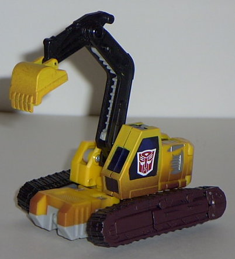
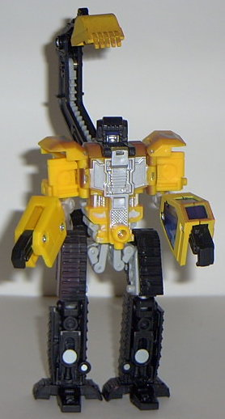
Size
: Deluxe
Difficulty of Transformation
: Medium
Individual Rating
: 7.3
(For a full review of the RiD Grimlock mold, check out the original toy review here .)
Grimlock's color scheme
is more reminiscent of an actual excavator this time around- instead of
green, he's now more of a constructiony yellow. He's got some nice "mud"
fade patterns on the lower half of his vehicle mode, his treads, and his
digger shovel. Combined with the "worn metal" silver paint apps that are
scattered throughout his body, he makes a more convincing excavator as
this guy. However, as the overall color scheme goes, I think that the green
was a bit better to look at rather than just the plain yellow and black.
Not that this scheme is bad, though.
No mold changes have
been made to Grimlock.
 Heavy
Load
Heavy
Load
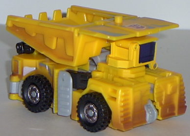
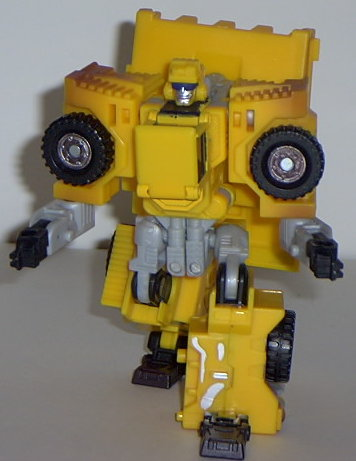
Size
: Deluxe
Difficulty of Transformation
: Easy
Individual Rating
: 7.9
(For a full review of the Heavy Load mold, check out the original toy review here .)
Like the other Yellow
Build Team members, Heavy Load has some nice mud fade patterns on his bototm
half in vehicle mode, as well as silver "worn metal" splotches throughout
his structure. However... he's almost exactly the same as his previous
version otherwise. It doesn't show that a whole lot of thought went into
him. I mean, I can understand the need for unified color schemes, but at
least switch the colors up a little or something. Also, the fact that ALL
the paint apps for his front and back bumpers and headlights are gone as
a sacrifice for the mud paint apps makes him look a little underdetailed
in his alt mode. Still, he's a heck of a lot cheaper this time around...
No mold changes have
been made to Heavy Load.
 Hightower
Hightower
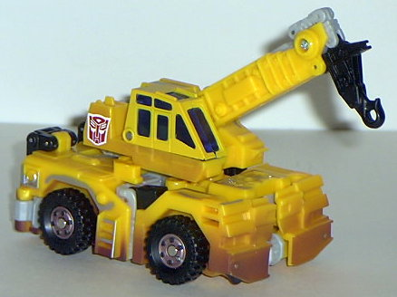
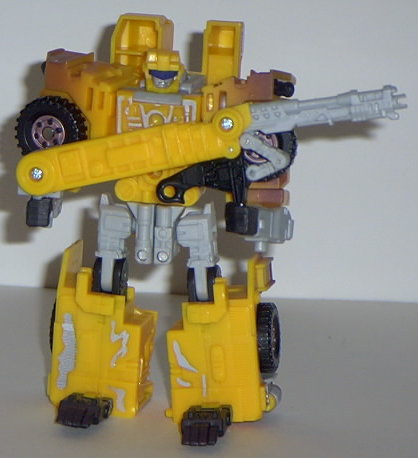
Size
: Deluxe
Difficulty of Transformation
: Easy
Individual Rating
: 8.2
(For a full review of the Hightower mold, check out the original toy review here .)
Yep. Pretty much the
same comments for Hightower as for the other two. More realistic scheme
with the mud and worn metal paint apps, but the former colors still looked
better. No headlight or bumper paint apps because of the mud stuff. But
he is a lot cheaper. Let's keep moving on... (I think that's the shortest
toy review I've ever done...)
No mold changes have
been made to Hightower.
 Wedge
Wedge
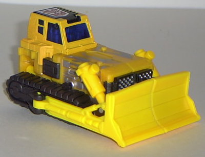
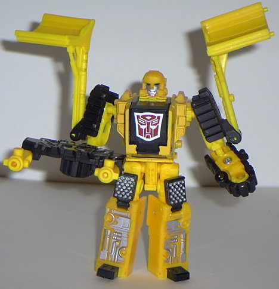
Size
: Deluxe
Difficulty of Transformation
: Easy
Individual Rating
: 9.3
(For a full review of the Wedge mold, check out the original toy review here .)
One of the things I like
about Wedge is that he's small enough where this color scheme doesn't start
to get a little monotonous. The silver worn bits on the front hood break
up all the yellow prettty nicely, as do the treads. Oddly enough, there's
no mud paint apps on the front plow, even though there's some on the treads.
That's... not what I'd expect... And as for this scheme compared with his
previous one, I'm on the fence as to which one I like more. This one is
more realistic and the paint apps are better-placed, but yellow on Transformers
HAS been overdone recently, whereas orange hasn't... Hmm.... Let's just
say I like them both just as much. But this version gets a little higher
of a rating because he's cheaper.
No mold changes have
been made to Wedge.
 Landfill
Landfill
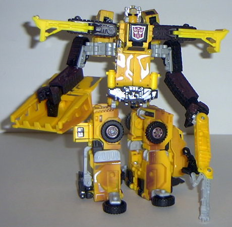
Size
: Gestalt (combination of four
Deluxes)
Difficulty of Transformation
: Very
Hard
Individual Rating
: 5.9 ("Heavy Load"
and "Hightower" configurations [see the original toy review for pictures
of those configs]); 5.8 ("Grimlock" configuration [shown above])
(For a full review of the Landfill combined mode, check out the original toy review here .)
The color scheme is definitely
its best in the combined Landfill form, as it's a little bit (but not much)
harder to tell that he's a gestalt. No more green, red, orange, and yellow
Landfill here- now he's just an even yellow, black, and gray. With all
the paint apps of the previous versions, of course. Shame about the mold
though.
No mold changes have
been made to Landfill.
Landfill, at least going by his color scheme, is probably a bit more boring as this version, although at least the worn metal and mud paint apps help spice things up a bit. But, dude... he's FIFTEEN DOLLARS for a $40 toy. And some Wal-Marts have even marked him down below THAT. That's an insanely good deal. So even though he looks a little worse than the original RiD Landfill set, I'd recommend this version over the older one any day.
No Stats
Review by Beastbot